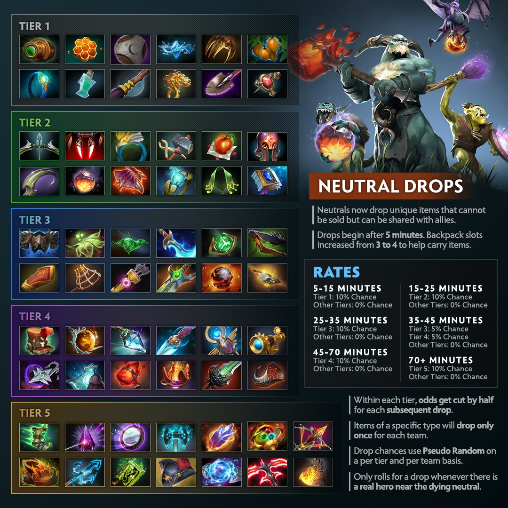

Doto 2 Game Mechanics
-
Basic Positioning
In order to perform better in your games, you need to learn the basic positioning of your hero. You need to look at the mini-map more often so you keep yourself aware of the enemy and farm in the safe zone. Similarly, you need to understand the high-ground advantage as you will have a vision about what is in front of you and you won’t miss an attack.
-

PRIORITIZING TOWERS AND ITEMS
Object-based gaming is very essential in Dota 2. Taking towers when you win a team fight should be your first priority. Similarly, understanding the item build on each hero is compulsory. Each game brings up a new scenario and under each scenario, different item build works.
-
TYPES OF CREEPS AND BOUNTIES
Understanding the different kinds of creeps is very important as killing a ranged creep gives you a different bounty than a melee. Similarly, after every 7 and a half minutes in a game, all the creeps get a buff in their health, bounty, and damage. If you are aware of these little details, you can capture better results.
-
BUYING MECHANICS
In order to farm quickly, understanding buying mechanics is very important. If you have an item available on your hero and you need another item but the new item comes with the combination of your current item, you can disassemble your current item and mix it with the new one. This way, you can get new items quickly. Similarly, you get a stash where you hold the items but they are not equipped. You can also drop the items from your stash directly into your base.
-
LAST HITTING AND DENYING UNITS
Understanding your hero damage and last hitting the units makes you more comfortable with your farming pace. Securing more last hits provides more gold and experience. During the early phases of the game, more last hitting dominates the lane. Similarly, denying friendly units is very important. It prevents enemies from capturing any kind of experience or gold. You can deny any friendly creep if its health is less than a specific number. You can use the last hit and deny techniques on towers as well. Taking the last hit on the enemy tower will provide you more experience and denying your own tower will prevent the enemies from having any experience and gold.
-
Conclusion
Dota 2 is a vast game that includes numerous things going on at the same time. To become better at the game, learning small details and basic mechanics is very important. In the above article, some of the top basic mechanics have been shared. There are plenty of other basics as well but these tricks could easily provide you a better picture of the game.